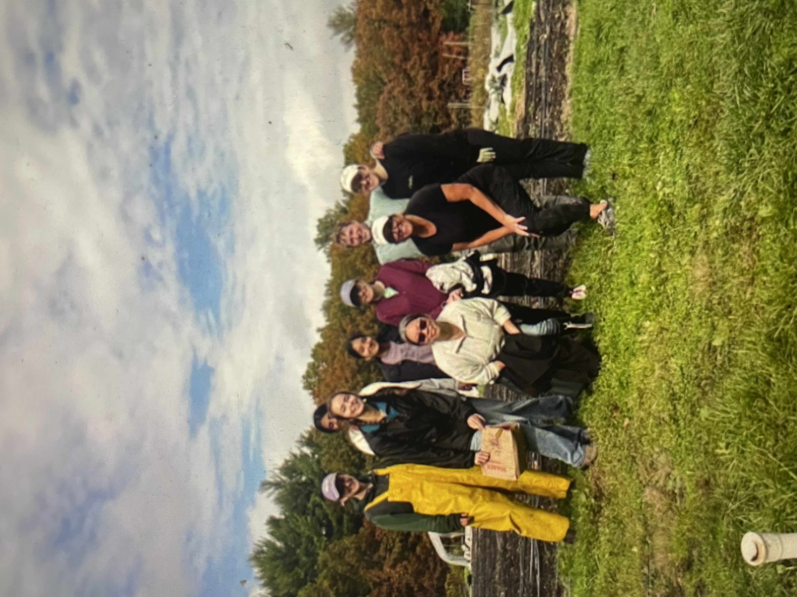

Research Assistant
Academy of Sciences of the Czech Republic · Remote
Building data pipelines and database tables to ingest, clean, and structure large-scale scientific datasets. Developing interactive Streamlit dashboards mapping fungi and bat distributions to visualize ecological patterns.
Software Engineer
Northeastern Student Government Association · Boston, MA
Creating backend API routes in TypeScript and migrating data from Firebase to Supabase to improve backend security and streamline developer workflows. Designing and programming frontend components, enhancing usability and data visualization for the attendance manager website.
Data Engineering Co-op
Purple Carrot · Needham, MA
Implemented time series machine learning models in Python to forecast six-month product demand, achieving over 70% accuracy. Built and tested data pipelines for migration from Amazon Redshift to Snowflake, reducing runtime by 85%. Created Looker dashboards to visualize trends and A/B testing results, enabling the finance team to make informed product and advertising budget decisions.

Research Assistant
Northeastern Biomechanics Lab · Boston, MA
Analyzed brain frequency image data using Python's ANTsPy and developed clustering models to identify high-risk brain impact patterns. Visualized MRI simulation and experimental data with Matplotlib and Plotly, using insights to optimize helmet designs for improved head protection.
Software Engineer Intern
ARCTEX Software · Remote
Developed API endpoints for data retrieval and secure authentication, deployed on Kubernetes to streamline backend workflows. Designed interactive JavaScript dashboards for the CollegeAppAssist app to visualize application data and improve usability for students.
Get in Touch
I'd love to connect! Reach out via any of the links below.